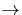

Next: 2 Le droulement du
Up: 1 L'objectif du projet
Previous: 1.1 La technologie PUSH
L'émetteur possède le contrôle du flux d'information, c'est-à-dire
qu'il s'abonne à un canal Multicast. Il choisit les transparents et les
diffuse sur le canal IP Multicast dans l'ordre qui lui convient, avec le
rythme qu'il désire (possibilité d'aller en avant ou en arrière, et
de rendre la séquence automatique).
Le récepteur, lui, ne peut que s'abonner à un canal Multicast, sur
lequel il recevra le flux d'information. Il ne peut pas exercer de
contrôle sur la réception des transparents (si ce n'est dmarrer ou
interrompre la rception).
Les transparents se présentent sous la forme de pages HTML
classiques. Aussi, émetteur comme récepteur doivent disposer d'un
navigateur pour les visualiser. Le transfert sur le canal Multicast, par
contre, s'effectue sous la forme de blocs d'octets. Il y a donc conversion
des données, entre leur utilisation et leur transport:
- L'metteur doit, avant mission, convertir la page HTML en
fichier binaire comprenant la page elle-mme et les images, appelettes, et
autres composants de la page.
- Le rcepteur, lui, doit reconstituer, avant de l'afficher, la page
HTML et les diffrents fichiers auxquels fait rfrence la page, tout
cela partir du fichier binaire reçu.
Le projet a t réalisé dans le langage de programmation Java.
Il se base sur le protocole de diffusion Multicast sur IP, AMP
Asynchronous Multicast Protocol, implment par Stphan Kraus l'Institut
Eurcom.
De plus, il comporte plusieurs parties, correspondant aux trois couches
logiques suivantes:
 Le contrôle:
Le contrôle:
- défilement de la séquence des
transparents, et abonnement à Multicast,
-
La conversion des données:
- HTML

Fichier Binaire, et Fichier Binaire HTML, pour rendre
les pages HTML transportables sur Multicast,
-
L'interface graphique:
 Pour l'émetteur:
Pour l'émetteur:
- panel de contrôle de défilement, gestion
du nom de canal Multicast,
-
Pour le récepteur:
- afficher les transparents, les enregistrer
(fonction que nous n'avons pas implmente pour l'instant puisque les
transparents sont visualiss avec Netscape, et qu'il suffit donc
d'effectuer un Save As pour enregister la page et ses composants
depuis Netscape mme) et les repasser ultérieurement (toujours en
utilisant Netscape ou un autre diteur de pages HTML).
Bien sr, il y a aussi une quatrime couche, celle de transport des fichiers
binaires: c'est celle qui implmente AMP.
Next: 2 Le droulement du
Up: 1 L'objectif du projet
Previous: 1.1 La technologie PUSH
Denis Arnaud
12/19/1997